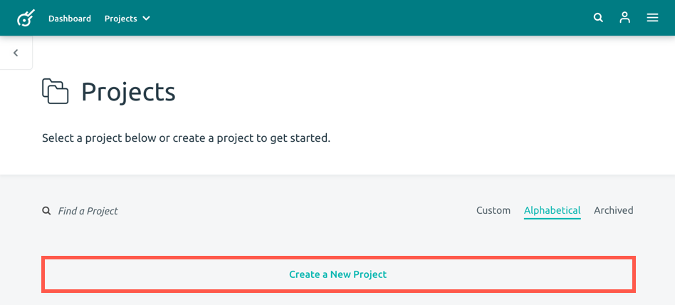
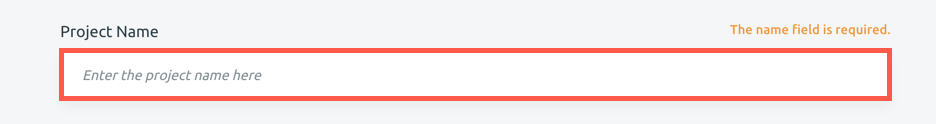
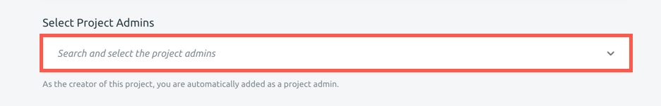
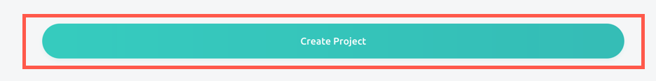

Creating a Project
A project is the highest organizational level in a Kora installation. Each project is a descreet container that has its own forms, records, and users. A single Kora installation can have multiple projects, all of which can be administered and managed separately.
To create a project:
-
Click the Create a New Project button at the top of your Projects landing page. This will bring you to the New Project page. Alternatively, you can select Create New Project from the Project dropdown menu

-
On the New Project page, enter the name of the your project in the Project Name field. This is a required field.

-
Next, fill out the project description in the Description field. This is a required field, with a maximum of 1000 characters.

-
From here, you can select additional project administrators. As the creator of the project, you are automatically added as an admin. Open the Select Project Admins dropdown menu to view a list of all users associated with your Kora install. Select those users you would like to add as project admins (as many as you want). Alternatively, you can type a name into the field to find a particular user (this is helpful if your Kora install has a lot of users, and you don't want to scroll through a very long list of names to find the person you want). Remember, you can also add users to your project after it has been created. Visit the Adding Users to Projects Guide for more information.

-
After you have filled out the project name, project description, and selected any additional admins, click the Create Project button at the bottom of the page to create your project.

You are also able to edit, delete, archive, export, and import projects. Visit the guides below to learn how: